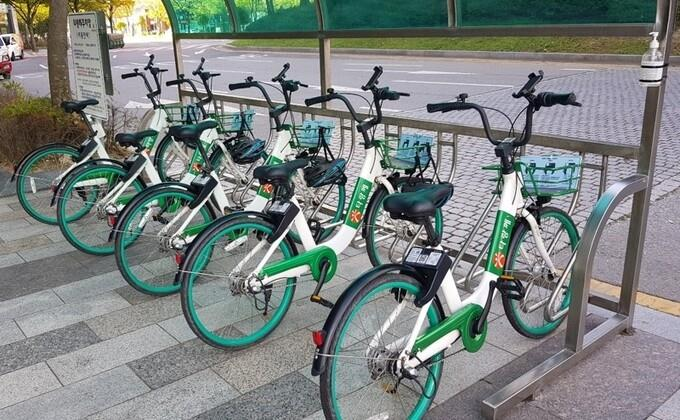

온대기후 맞춤형 도시 인프라(2)
온대기후
기상정보
온대기후 맞춤형
도시 인프라(1)
온대기후 맞춤형
도시 인프라(2)

원인: 온대 기후는 일반적으로 따뜻하고 습도가 높은 기후
- 자전거 인프라를 설치하기 매우 적합한 환경
-> 자전거 인프라
-자전거 전용 도로를 설치하여
차량과 보행자와의 접촉을 최소화해야 함.
- 자전거 보관 및 공유 시스템을 만들어서
시민들의 자전거에 대한 접근성을 높인다.